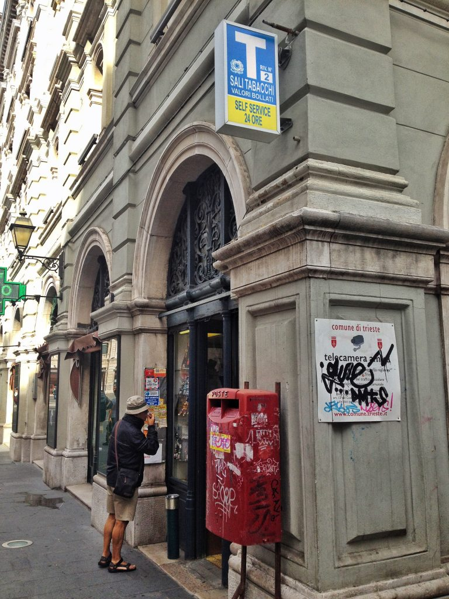

Photo by Francesca Tosolini
Usually, there are big lines at the post offices; remember though that you don’t need to go the post office to purchase stamps. You can do it at any tabaccheria (tobacconist), a store recognizable by a big white T against a blue or black background. Here you can also find the blue self-adhesive “by airmail/via aerea" sticker, that, according to the Italian postal service, is mandatory if you need to send either postcards or letters overseas (however, based on my experience, mail arrives at its destination even without it). Once your postcard/letter is stamped and ready to go, look for the red mailboxes, which most of the times are installed right outside the tabaccherie and where you can drop your stamped mail (see photo above). {This is an excerpt from chapter 9 “The Post Office Information” of the eBook “Italy from the Inside. A native Italian reveals the secrets of traveling in Italy”}